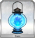
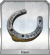
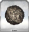
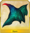

Sparen's FGO Drop Rate Log
Welcome to my Fate/Grand Order North America server drop rate contribution log.
This project, started October 15, 2017, aims to log my contributions to the crowdsourcing for free and daily quest drop rates in Fate/Grand Order. I am storing publicly as a git repository so that I can visually see when I mess up (since I guarantee I will forget to do something eventually), and so that others can see where the numbers I contribute are coming from.
As of yet, I do not know how long I will maintain this project, or how many different things I will cover. However, the data is available for those who are curious. See the sidebar for links to the different sites.
Drop Submissions
I am logging on the following sites:
Daily Quests
Halloween Event 2017 Free Quests
GUDAGUDA Honnouji 2017 Free Quests
Christmas Event 2017 Free Quests
Notes
Class ordering is always SABER LANCER ARCHER RIDER CASTER ASSASSIN BERSERKER
Column (Col) is the column number I am using in the crowdsourcing documents.
Last Update is the last update date for the crowdsourcing documents.
# column is total # runs used for logging.
EXP Servant card drops are not tallied for free quests other than Fuyuki out of convention.
EXP Servant card drops are only uplogged to the crowdsourcing spreadsheets for Daily Quests if a field exists. Generally, only Silver EXP drops are actually logged. However, on my site I will log all of them for dailies.
Logging Procedures
Log new data in the log-daily.js, log-free.js, and log-event.js. From October 15, 2017 - November 10, 2017, all of the log data went in log-master but that turned log-master into a 1500 line behemoth, hence the refactoring. The uplog field is true if I have already posted the data to the public spreadsheet, and false otherwise.
Cells will contain the following format: # [#], where the outer number is the number of unlogged data points and where the number in brackets is the total count.
There used to be many tables here, but I automated everything with Javascript. :(
I'm only leaving the ascension drops because why not. The master list should be sorted first by rarity and then by alphabetical order.
| Location + Quest | Col | Last Upd | DF |
EB |
PoH |
VD |
FP |
 GL |
HB |
IG |
 MH |
OC |
PF |
SJ |
 SoY |
CoC |
 DRS |
HFG |
|---|